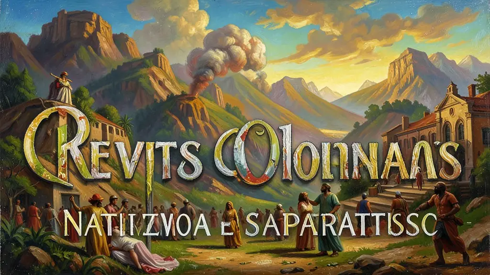
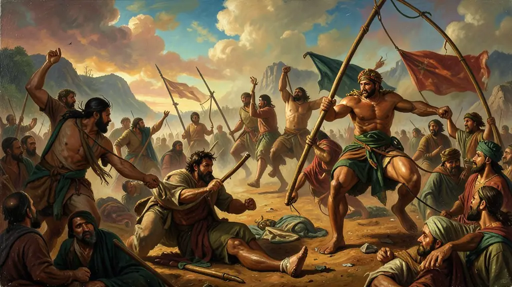
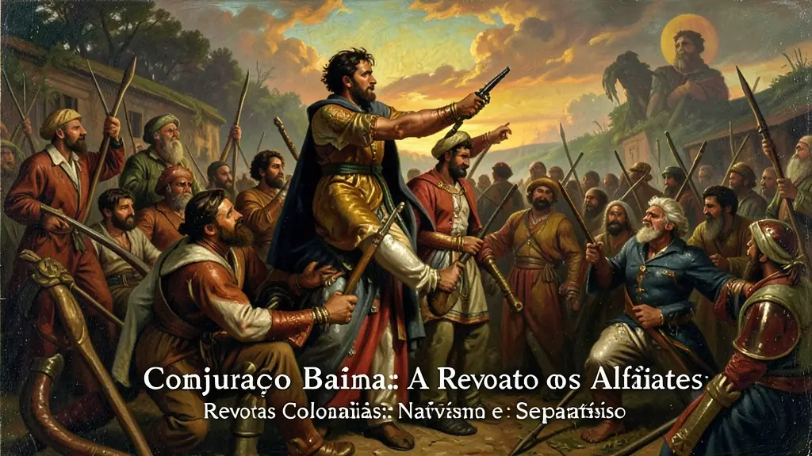

Capítulo 01
1. Revolta de Beckman e a Guerra dos Mascates
No Maranhão (1684), os irmãos Beckman lideraram o povo contra o monopólio da Companhia de Comércio do Maranhão que vendia caro e entregava mercadorias de má qualidade. Foi o primeiro grande grito contra o pacto colonial econômico. Já em Pernambuco (1710), a Guerra dos Mascates opôs a aristocracia rural de Olinda (senhores de engenho em decadência) aos comerciantes portugueses de Recife (os 'Mascates', novos ricos). Mostrou o choque entre a tradição agrária e o novo capital comercial.

Capítulo 02
2. Inconfidência Mineira e o Mito de Tiradentes
A Inconfidência nasceu em banquetes e saraus literários. Poetas (como Cláudio Manuel da Costa e Tomás Antônio Gonzaga), padres e mineradores endividados com a Coroa planejavam uma república em Vila Rica. Tiradentes, o de menor patente entre eles, foi o bode expiatório usado para amedrontar a população. O movimento foi denunciado por Joaquim Silvério dos Reis em troca do perdão de suas dívidas, antes mesmo de começar.

Capítulo 03
3. Conjuração Baiana: A Revolta dos Alfaiates
Diferente de Minas, na Bahia os panfletos eram colados nas portas das igrejas clamando por 'Liberdade, Igualdade e Fraternidade'. Os soldados e alfaiates baianos queriam o fim do preconceito de cor e a abolição da escravidão. Enquanto a elite de Minas pedia por impostos menores, o povo baiano pedia por comida (pão) e liberdade real para todos os homens, independentemente da raça.

Capítulo 04
4. Influência das Luzes e das Revoluções Externas
As revoltas separatistas não teriam existido sem o Iluminismo. Livros proibidos chegavam às mãos de estudantes brasileiros que voltavam da Europa. A Independência dos EUA (1776) serviu de prova prática de que uma colônia poderia vencer a metrópole. A Revolução do Haiti (1804), por outro lado, causou pavor nas elites brasileiras, que passaram a vigiar qualquer movimento que pedisse o fim da escravidão.
Capítulo 05
5. Repressão e Legado Institucional
A Coroa Portuguesa reagiu com extrema violência a qualquer tentativa separatista. As 'Devassas' (investigações) destruíam famílias e propriedades. No entanto, esses movimentos foram fundamentais para criar um sentimento de 'brasilidade' que explodiria mais tarde em 1822. O Brasil aprendeu que o pacto colonial era uma camisa de força que impedia o crescimento de qualquer setor que não fosse o extrativismo puro.
As revoltas coloniais no Brasil (séculos XVII e XVIII) dividem-se em nativistas e emancipacionistas, refletindo o amadurecimento das tensões entre a colônia e o sistema mercantilista português. Enquanto revoltas como a de Beckman e a dos Mascates buscavam ajustes no pacto colonial, movimentos como a Inconfidência Mineira (1789) e a Conjuração Baiana (1798) foram influenciados pelo Iluminismo e pelas revoluções atlânticas, almejando a ruptura definitiva com a metrópole e a fundação de repúblicas independentes.
A Inconfidência Mineira, embora marcada pelo caráter elitista da aristocracia mineira endividada, tornou-se o principal símbolo da resistência brasileira através da figura de Tiradentes, construída posteriormente pela República. Já a Conjuração Baiana, ou Revolta dos Alfaiates, destacou-se por seu caráter popular e radical, defendendo não apenas a independência, mas a abolição da escravidão e a igualdade racial. Ambos os movimentos foram duramente reprimidos, demonstrando a incapacidade da Coroa Portuguesa de negociar com os anseios de liberdade das Américas.
O estudo das revoltas coloniais para o Enem permite analisar como a crise do sistema colonial foi alimentada por contradições econômicas (derrama, monopólios) e pela circulação de ideias revolucionárias. É essencial comparar as diferentes bases sociais de cada levante e como o Estado português utilizou o espetáculo da punição (como o esquartejamento de Tiradentes) para desencorajar futuras insurgências. Esses episódios revelam que o Brasil não nasceu de um consenso pacífico, mas de séculos de resistência e sonhos republicanos.
Fonte: MAXWELL, Kenneth. A Devassa da Devassa: A Inconfidência Mineira, Brasil e Portugal - 1750-1808. Rio de Janeiro: Paz e Terra, 2005.
Atividades interativas
Questões para fixar
A principal diferença social entre a Inconfidência Mineira (1789) e a Conjuração Baiana (1798) reside no fato de que:
O termo 'Revolta Nativista' é atribuído aos conflitos coloniais que: